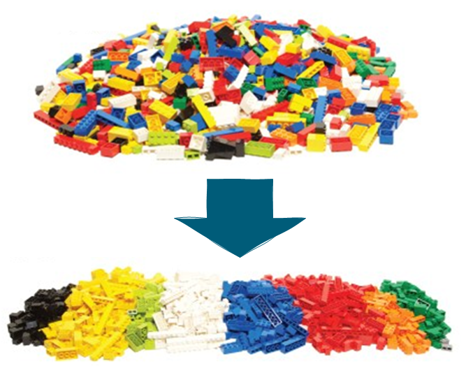
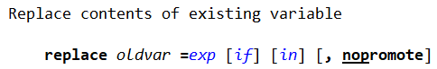
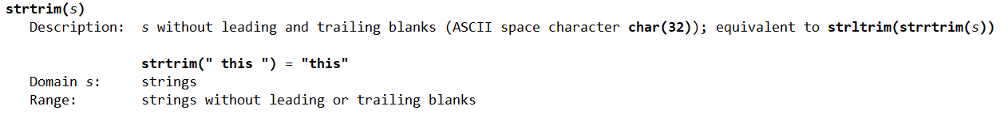
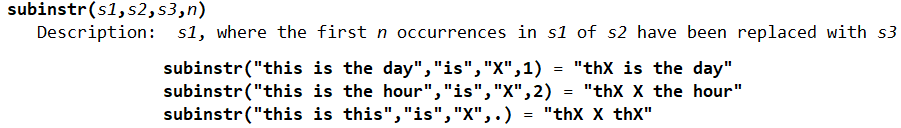
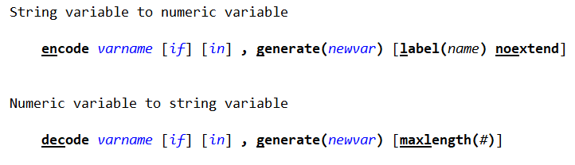
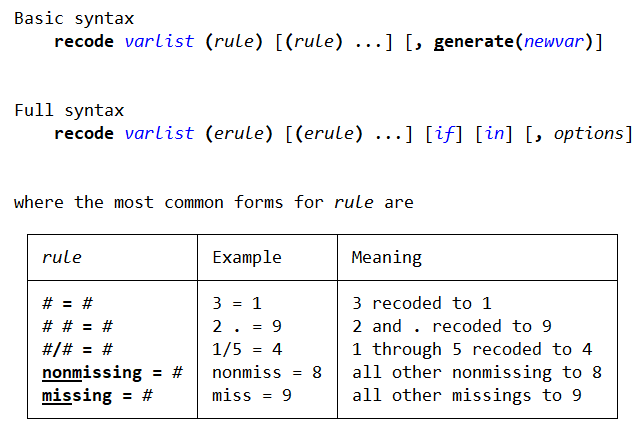

Cleaning data
Luiza Andrade and Sushmita Samaddar
What is data cleaning?

What is data cleaning?
- Cleaning is about changing the format of the data to the format that is the most efficient to store and handle in statistical software and also the easiest for humans to understand
- We are not making changes to the information contained in the data set – this will come later, in data construction
Output: the cleaned data set
- At the end of this process, you should have a data set that is essentially the same as the one you originally acquired
- During data cleaning, we will change the format of the data
- We will not make significant changes to individual data points
- The main difference between the raw and the clean data sets lies in how easy it is to understand them and handle them in statistical software
- One clean dataset will be created for each data source
Setting the stage
Exercise:
- Launch Stata by opening the Stata project
Introduction to Stata.stpr
- Open a new do-file
- Load the
process_raw data set
In case you don’t remember this from the last session, you can use the use command and the Stata project features to open a data set by typing
Setting the stage
Exercise:
- Launch Stata by opening the Stata project
Introduction to Stata.stpr
- Open a new do-file
- Load the
process_raw data set
In case you don’t remember this from the last session, you can use the use command and the Stata project features to open a data set by typing
use "DataWork/Data/Raw/process_raw.dta", clear
Identifying string variables
What are different ways to identify the string variables in our data set?
Identifying string variables
What are different ways to identify the string variables in our data set?
codebook- Variables and Properties windows
- Browsing the dataset
Identifying string variables
. codebook, compact
Variable Obs Unique Mean Min Max Label
──────────────────────────────────────────────────────────────────────────────────────────────────────────────────────────────────
Nadmetanje~D 24999 24999 230198.5 168120 312400 Nadmetanje_ID
Ustrojstve~D 24999 1902 . . . UstrojstvenaJedinica_ID
Entity_cou~y 24998 21 . . . Entity_county
Entity_Naziv 24999 1892 . . . Entity_Naziv
Process_Na~v 24999 21656 . . . Process_Naziv
Process_Oz~a 24999 22722 . . . Process_Oznaka
PostupakNa~r 24991 11 . . . PostupakNadmetanja_Naziv_tr
TipNadmeta~r 24999 6 . . . TipNadmetanja_Naziv_tr
StatusNadm~r 24999 10 . . . StatusNadmetanja_Naziv_tr
VrstaNadme~r 24999 26 . . . VrstaNadmetanja_Naziv_tr
TipNabave_~r 24984 3 . . . TipNabave_Naziv_tr
MetodaEval~r 24999 2 . . . MetodaEvaluacije_tr
RokZ~uPonuda 22649 1615 21368.51 20108 22459 RokZaDostavuPonuda
RokZaDosta~j 24999 400 . . . RokZaDostavuZahtSudj
RokZ~hPonuda 24999 1024 . . . RokZaDostavuInicijalnihPonuda
Process_Vr~e 24999 7305 4296435 294.8 2.04e+09 Process_VrijednostNabave
Process_In~o 24999 24639 . . . Process_InsertDateTimeo
──────────────────────────────────────────────────────────────────────────────────────────────────────────────────────────────────
Cleaning string variables
. codebook Entity_county Entity_Naziv Process_Naziv Process_Oznaka PostupakNadmetanja_Naziv_tr TipNadmetanja_Naziv_tr StatusNadmet
> anja_Naziv_tr VrstaNadmetanja_Naziv_tr TipNabave_Naziv_tr MetodaEvaluacije_tr RokZaDostavuZahtSudj
──────────────────────────────────────────────────────────────────────────────────────────────────────────────────────────────────
Entity_county Entity_county
──────────────────────────────────────────────────────────────────────────────────────────────────────────────────────────────────
type: string (str23)
unique values: 21 missing "": 1/24,999
examples: "CITY OF ZAGREB"
"CITY OF ZAGREB"
"KOPRIVNICA-KRIZEVCI"
"SISAK-MOSLAVINA"
warning: variable has embedded blanks
──────────────────────────────────────────────────────────────────────────────────────────────────────────────────────────────────
Entity_Naziv Entity_Naziv
──────────────────────────────────────────────────────────────────────────────────────────────────────────────────────────────────
type: string (str131)
unique values: 1,892 missing "": 0/24,999
examples: "GRAD ZAGREB"
"HRVATSKE CESTE D.O.O. ZAGREB"
"KLINIčKI BOLNIčKI CENTAR OSIJEK"
"OPćINA KRAPINSKE TOPLICE"
warning: variable has embedded and trailing blanks
──────────────────────────────────────────────────────────────────────────────────────────────────────────────────────────────────
Process_Naziv Process_Naziv
──────────────────────────────────────────────────────────────────────────────────────────────────────────────────────────────────
type: string (str1013)
unique values: 21,656 missing "": 0/24,999
examples: "Izvođenje građevinsko-obrtničkih radova na
građevinama domova zdravlja"
"Nabava potrošnog materijala-CD-DVD za RTG"
"Poštanske usluge"
"UNIFORME ZA ZAŠTITARE - ČUVARE"
warning: variable has embedded and trailing blanks
──────────────────────────────────────────────────────────────────────────────────────────────────────────────────────────────────
Process_Oznaka Process_Oznaka
──────────────────────────────────────────────────────────────────────────────────────────────────────────────────────────────────
type: string (str290)
unique values: 22,722 missing "": 0/24,999
examples: "2019-2276"
"451O14MŠ-Održavanje"
"Feb-18"
"MV-28/16"
warning: variable has leading and embedded blanks
──────────────────────────────────────────────────────────────────────────────────────────────────────────────────────────────────
PostupakNadmetanja_Naziv_tr PostupakNadmetanja_Naziv_tr
──────────────────────────────────────────────────────────────────────────────────────────────────────────────────────────────────
type: string (str57)
unique values: 11 missing "": 8/24,999
examples: "Open procedure"
"Open procedure"
"Open procedure"
"Open procedure"
warning: variable has embedded blanks
──────────────────────────────────────────────────────────────────────────────────────────────────────────────────────────────────
TipNadmetanja_Naziv_tr TipNadmetanja_Naziv_tr
──────────────────────────────────────────────────────────────────────────────────────────────────────────────────────────────────
type: string (str26)
unique values: 6 missing "": 0/24,999
tabulation: Freq. Value
34 "Exemption procurement"
4,101 "Procurement of great value"
19,411 "Procurement of small value"
26 "Small value"
23 "Trivial"
1,404 "Trivial procurement"
warning: variable has embedded blanks
──────────────────────────────────────────────────────────────────────────────────────────────────────────────────────────────────
StatusNadmetanja_Naziv_tr StatusNadmetanja_Naziv_tr
──────────────────────────────────────────────────────────────────────────────────────────────────────────────────────────────────
type: string (str33)
unique values: 10 missing "": 0/24,999
examples: "Agreed"
"Agreed"
"Agreed"
"Canceled"
warning: variable has embedded and trailing blanks
──────────────────────────────────────────────────────────────────────────────────────────────────────────────────────────────────
VrstaNadmetanja_Naziv_tr VrstaNadmetanja_Naziv_tr
──────────────────────────────────────────────────────────────────────────────────────────────────────────────────────────────────
type: string (str92)
unique values: 26 missing "": 0/24,999
examples: "Open public procurement procedure"
"Open public procurement procedure"
"Open public procurement procedure"
"Open public procurement procedure"
warning: variable has embedded blanks
──────────────────────────────────────────────────────────────────────────────────────────────────────────────────────────────────
TipNabave_Naziv_tr TipNabave_Naziv_tr
──────────────────────────────────────────────────────────────────────────────────────────────────────────────────────────────────
type: string (str8)
unique values: 3 missing "": 15/24,999
tabulation: Freq. Value
15 ""
11,150 "Goods"
8,118 "Services"
5,716 "Works"
──────────────────────────────────────────────────────────────────────────────────────────────────────────────────────────────────
MetodaEvaluacije_tr MetodaEvaluacije_tr
──────────────────────────────────────────────────────────────────────────────────────────────────────────────────────────────────
type: string (str12)
unique values: 2 missing "": 0/24,999
tabulation: Freq. Value
8,625 "Lowest price"
16,374 "MEAT"
warning: variable has embedded blanks
──────────────────────────────────────────────────────────────────────────────────────────────────────────────────────────────────
RokZaDostavuZahtSudj RokZaDostavuZahtSudj
──────────────────────────────────────────────────────────────────────────────────────────────────────────────────────────────────
type: string (str23)
unique values: 400 missing "": 0/24,999
examples: "NULL"
"NULL"
"NULL"
"NULL"
warning: variable has embedded blanks
- Quite a few variables also have the value “NULL” in them
- We also see a warning about spaces

Cleaning string variables: replace

Tip: Replace works with all types of variables, not only strings.
Cleaning string variables: replace
Exercise: replace all occurrences of the value “NULL” in the variable Process_Naziv with the missing value ""
Cleaning string variables: replace
Exercise: replace all occurrences of the value “NULL” in the variable Process_Naziv with the missing value ""
. replace Process_Naziv = "" if Process_Naziv == "NULL"
(1 real change made)
Cleaning string variables: replace
Exercise: replace all occurrences of the value “NULL” in the variable Process_Naziv with the missing value ""
. replace Process_Naziv = "" if Process_Naziv == "NULL"
(0 real changes made)
Note that whenever we refer to text, that is, to the content of string variables, use write this content between quotes.
Cleaning string variables
We can use the problems option of codebook to get more detail about the issue with spaces
. codebook Entity_county Entity_Naziv Process_Naziv Process_Oznaka PostupakNadmetanja_Naziv_tr TipNadmetanja_Naziv_tr StatusNadmet
> anja_Naziv_tr VrstaNadmetanja_Naziv_tr TipNabave_Naziv_tr MetodaEvaluacije_tr RokZaDostavuZahtSudj, problems
Potential problems in dataset ../DataWork/Data/Raw/process_raw.dta
potential problem variables
──────────────────────────────────────────────────────────────────────────────────────────────────────────────────────────────────
string vars with leading blanks Process_Oznaka
string vars with trailing blanks Entity_Naziv Process_Naziv StatusNadmetanja_Naziv_tr
string vars with embedded blanks Entity_county Entity_Naziv Process_Naziv Process_Oznaka PostupakNadmetanja_Naziv_tr
TipNadmetanja_Naziv_tr StatusNadmetanja_Naziv_tr VrstaNadmetanja_Naziv_tr MetodaEvaluacije_tr
RokZaDostavuZahtSudj
──────────────────────────────────────────────────────────────────────────────────────────────────────────────────────────────────
Cleaning string variables
- Humans can tell the meaning of a word regardless of which letters are capitalized or not, of how spaces are used, and even if they are misstyped, but Stata is not that smart
- It may be hard for the human eye to see one extra space, but not for Stata
Cleaning string variables
Let’s take a closer look at the values of StatusNadmetanja_Naziv_tr:
. tab StatusNadmetanja_Naziv_tr
StatusNadmetanja_Naziv_tr │ Freq. Percent Cum.
──────────────────────────────────┼───────────────────────────────────
AGREED │ 174 0.70 0.70
Agreed │ 19,241 76.97 77.66
Canceled │ 1,718 6.87 84.54
In contracting │ 665 2.66 87.20
In contracting │ 78 0.31 87.51
On appeal │ 14 0.06 87.56
Published / queries for quotation │ 999 4.00 91.56
Registration of offers │ 1,687 6.75 98.31
Selection decision │ 422 1.69 100.00
Suggested │ 1 0.00 100.00
──────────────────────────────────┼───────────────────────────────────
Total │ 24,999 100.00
Cleaning string variables
- AGREED and Agreed mean the same thing
- So do “In contracting” and “In contracting”
- In order for Stata to consider these as the same information, however, we need to make sure they contain exactly the same characters, including which letters are in lower or upper case
Change cases
upper(s) capitalize all characters in string s
lower(s) make all characters in string s lower case
proper(s) capitalize only the first letter of each word in string s
- Note these are functions, not commands
- Functions cannot be used by themselves, but rather need to be used inside a command.
- To see the help file for functions we need to add parentheses after their names:
help proper()
Change cases
Here is an example of how to use them:
. replace StatusNadmetanja_Naziv_tr = upper(StatusNadmetanja_Naziv_tr)
(24,825 real changes made)
. tab StatusNadmetanja_Naziv_tr
StatusNadmetanja_Naziv_tr │ Freq. Percent Cum.
──────────────────────────────────┼───────────────────────────────────
AGREED │ 19,415 77.66 77.66
CANCELED │ 1,718 6.87 84.54
IN CONTRACTING │ 665 2.66 87.20
IN CONTRACTING │ 78 0.31 87.51
ON APPEAL │ 14 0.06 87.56
PUBLISHED / QUERIES FOR QUOTATION │ 999 4.00 91.56
REGISTRATION OF OFFERS │ 1,687 6.75 98.31
SELECTION DECISION │ 422 1.69 100.00
SUGGESTED │ 1 0.00 100.00
──────────────────────────────────┼───────────────────────────────────
Total │ 24,999 100.00
Change cases
Exercise: test using upper() and lower() on a text variable and see how they affect it’s content.
Change cases
Exercise: test using upper() and lower() on a text variable and see how they affect it’s content.
. replace StatusNadmetanja_Naziv_tr = lower(StatusNadmetanja_Naziv_tr)
(24,999 real changes made)
. tab StatusNadmetanja_Naziv_tr
StatusNadmetanja_Naziv_tr │ Freq. Percent Cum.
──────────────────────────────────┼───────────────────────────────────
agreed │ 19,415 77.66 77.66
canceled │ 1,718 6.87 84.54
in contracting │ 665 2.66 87.20
in contracting │ 78 0.31 87.51
on appeal │ 14 0.06 87.56
published / queries for quotation │ 999 4.00 91.56
registration of offers │ 1,687 6.75 98.31
selection decision │ 422 1.69 100.00
suggested │ 1 0.00 100.00
──────────────────────────────────┼───────────────────────────────────
Total │ 24,999 100.00
Change cases
Exercise: test using upper() and lower() on a text variable and see how they affect it’s content.
. replace StatusNadmetanja_Naziv_tr = proper(StatusNadmetanja_Naziv_tr)
(24,999 real changes made)
. tab StatusNadmetanja_Naziv_tr
StatusNadmetanja_Naziv_tr │ Freq. Percent Cum.
──────────────────────────────────┼───────────────────────────────────
Agreed │ 19,415 77.66 77.66
Canceled │ 1,718 6.87 84.54
In Contracting │ 665 2.66 87.20
In Contracting │ 78 0.31 87.51
On Appeal │ 14 0.06 87.56
Published / Queries For Quotation │ 999 4.00 91.56
Registration Of Offers │ 1,687 6.75 98.31
Selection Decision │ 422 1.69 100.00
Suggested │ 1 0.00 100.00
──────────────────────────────────┼───────────────────────────────────
Total │ 24,999 100.00
Changing the content of string variables
- The functions we have just explored chance only the capitalization of text, not necessarily the letters and other characters in it
- As we have seen earlier, however, we also need to make adjustments to themselves
- In particular, we need to remove extra spaces that are difficult for the human eye to catch, but that make strings that should be considered the same as different values in Stata
- The next two functions we will learn about remove extra spaces and substitute specific characters in a string
strtrim(s)

Exercise: use strtrim() with replace to remove extra spaces from StatusNadmetanja_Naziv_tr
strtrim(s)
Exercise: use strtrim() with replace to remove extra spaces from StatusNadmetanja_Naziv_tr
. replace StatusNadmetanja_Naziv_tr = strtrim(StatusNadmetanja_Naziv_tr)
(78 real changes made)
. tab StatusNadmetanja_Naziv_tr
StatusNadmetanja_Naziv_tr │ Freq. Percent Cum.
──────────────────────────────────┼───────────────────────────────────
Agreed │ 19,415 77.66 77.66
Canceled │ 1,718 6.87 84.54
In Contracting │ 743 2.97 87.51
On Appeal │ 14 0.06 87.56
Published / Queries For Quotation │ 999 4.00 91.56
Registration Of Offers │ 1,687 6.75 98.31
Selection Decision │ 422 1.69 100.00
Suggested │ 1 0.00 100.00
──────────────────────────────────┼───────────────────────────────────
Total │ 24,999 100.00
subinstr(s1,s2,s3,n)

. replace RokZaDostavuZahtSudj = subinstr(RokZaDostavuZahtSudj, "NULL", "*", .)
(24,587 real changes made)
subinstr(s1,s2,s3,n)
. codebook RokZaDostavuZahtSudj
──────────────────────────────────────────────────────────────────────────────────────────────────────────────────────────────────
RokZaDostavuZahtSudj RokZaDostavuZahtSudj
──────────────────────────────────────────────────────────────────────────────────────────────────────────────────────────────────
type: string (str23)
unique values: 400 missing "": 0/24,999
examples: "*"
"*"
"*"
"*"
warning: variable has embedded blanks
Encode variables
- Each statistical software has optimized the formats it uses to store and handle different types if information
- The clean data set should contain no string variables, except for
- Proper nouns that are not categories
- Digits with leading zeros or long IDs (over 15 digits)
- That means categorical string variables must be transformed into labeled variables or factors
- Check that all categorical variables have value labels
Encode variables
How do you tell categorical variables from text variables when they don’t yet have value labels?
Encode variables
How do you tell categorical variables from text variables when they don’t yet have value labels?
By the number of different values they take
Encode variables
Which variables below are categorical?
. codebook, compact
Variable Obs Unique Mean Min Max Label
──────────────────────────────────────────────────────────────────────────────────────────────────────────────────────────────────
Nadmetanje~D 24999 24999 230198.5 168120 312400 Nadmetanje_ID
Ustrojstve~D 24999 1902 . . . UstrojstvenaJedinica_ID
Entity_cou~y 24998 21 . . . Entity_county
Entity_Naziv 24999 1892 . . . Entity_Naziv
Process_Na~v 24998 21655 . . . Process_Naziv
Process_Oz~a 24999 22722 . . . Process_Oznaka
PostupakNa~r 24991 11 . . . PostupakNadmetanja_Naziv_tr
TipNadmeta~r 24999 6 . . . TipNadmetanja_Naziv_tr
StatusNadm~r 24999 8 . . . StatusNadmetanja_Naziv_tr
VrstaNadme~r 24999 26 . . . VrstaNadmetanja_Naziv_tr
TipNabave_~r 24984 3 . . . TipNabave_Naziv_tr
MetodaEval~r 24999 2 . . . MetodaEvaluacije_tr
RokZ~uPonuda 22649 1615 21368.51 20108 22459 RokZaDostavuPonuda
RokZaDosta~j 24999 400 . . . RokZaDostavuZahtSudj
RokZ~hPonuda 24999 1024 . . . RokZaDostavuInicijalnihPonuda
Process_Vr~e 24999 7305 4296435 294.8 2.04e+09 Process_VrijednostNabave
Process_In~o 24999 24639 . . . Process_InsertDateTimeo
──────────────────────────────────────────────────────────────────────────────────────────────────────────────────────────────────
Encode variables
Which variables below are categorical?
Entity_countyPostupakNadmetanja_Naziv_trTipNadmetanja_Naziv_trStatusNadmetanja_Naziv_trVrstaNadmetanja_Naziv_trTipNabave_Naziv_trMetodaEvaluacije_tr
The process of transforming text variables into categorical variables in Stata is called “encoding”.
Encoding variables in Stata

Encoding variables in Stata
- Note that there is a required option called
gen()
- This option will create a new variable with the encoded version of the original one
. encode StatusNadmetanja_Naziv_tr, gen(bid_status)
Encoding variables in Stata
. codebook bid_status
──────────────────────────────────────────────────────────────────────────────────────────────────────────────────────────────────
bid_status StatusNadmetanja_Naziv_tr
──────────────────────────────────────────────────────────────────────────────────────────────────────────────────────────────────
type: numeric (long)
label: bid_status
range: [1,8] units: 1
unique values: 8 missing .: 0/24,999
tabulation: Freq. Numeric Label
19,415 1 Agreed
1,718 2 Canceled
743 3 In Contracting
14 4 On Appeal
999 5 Published / Queries For
Quotation
1,687 6 Registration Of Offers
422 7 Selection Decision
1 8 Suggested
Encoding variables in Stata
. labelbook bid_status
──────────────────────────────────────────────────────────────────────────────────────────────────────────────────────────────────
value label bid_status
──────────────────────────────────────────────────────────────────────────────────────────────────────────────────────────────────
values labels
range: [1,8] string length: [6,33]
N: 8 unique at full length: yes
gaps: no unique at length 12: yes
missing .*: 0 null string: no
leading/trailing blanks: no
numeric -> numeric: no
definition
1 Agreed
2 Canceled
3 In Contracting
4 On Appeal
5 Published / Queries For Quotation
6 Registration Of Offers
7 Selection Decision
8 Suggested
variables: bid_status
Encoding variables in Stata
Exercise: use encode to create a new variable called evaluation_method containing the encoded version of MetodaEvaluacije_tr
Encoding variables in Stata
Exercise: use encode to create a new variable called evaluation_method containing the encoded version of MetodaEvaluacije_tr
. encode MetodaEvaluacije_tr, gen(evaluation_method)
. tab evaluation_method
MetodaEvalua │
cije_tr │ Freq. Percent Cum.
─────────────┼───────────────────────────────────
Lowest price │ 8,625 34.50 34.50
MEAT │ 16,374 65.50 100.00
─────────────┼───────────────────────────────────
Total │ 24,999 100.00
Encoding variables in Stata
Exercise: use encode to create a new variable called evaluation_method containing the encoded version of MetodaEvaluacije_tr
. labelbook evaluation_method
──────────────────────────────────────────────────────────────────────────────────────────────────────────────────────────────────
value label evaluation_method
──────────────────────────────────────────────────────────────────────────────────────────────────────────────────────────────────
values labels
range: [1,2] string length: [4,12]
N: 2 unique at full length: yes
gaps: no unique at length 12: yes
missing .*: 0 null string: no
leading/trailing blanks: no
numeric -> numeric: no
definition
1 Lowest price
2 MEAT
variables: evaluation_method
Value labels
We have seen how value labels work. Now let’s talk about how we can handle them.

Value labels
Modify an existing value label:
. label define evaluation_method 2 "Most economically advantageous tender", modify
. tab evaluation_method
MetodaEvaluacije_tr │ Freq. Percent Cum.
──────────────────────────────────────┼───────────────────────────────────
Lowest price │ 8,625 34.50 34.50
Most economically advantageous tender │ 16,374 65.50 100.00
──────────────────────────────────────┼───────────────────────────────────
Total │ 24,999 100.00
Value labels
Create a new value label:
. label define eval 1 "Lowest price" 2 "Most economically advantageous tender"
Assign (new) value label to a variable:
. label values evaluation_method eval
. tab evaluation_method
MetodaEvaluacije_tr │ Freq. Percent Cum.
──────────────────────────────────────┼───────────────────────────────────
Lowest price │ 8,625 34.50 34.50
Most economically advantageous tender │ 16,374 65.50 100.00
──────────────────────────────────────┼───────────────────────────────────
Total │ 24,999 100.00
Encoding variables in Stata
Exercise: use encode to create a new variable called bidding_type containing the encoded version of TipNadmetanja_Naziv_tr
Encoding variables in Stata
Exercise: use encode to create a new variable called bidding_type containing the encoded version of TipNadmetanja_Naziv_tr
. encode TipNadmetanja_Naziv_tr, gen(bidding_type)
. codebook bidding_type
──────────────────────────────────────────────────────────────────────────────────────────────────────────────────────────────────
bidding_type TipNadmetanja_Naziv_tr
──────────────────────────────────────────────────────────────────────────────────────────────────────────────────────────────────
type: numeric (long)
label: bidding_type
range: [1,6] units: 1
unique values: 6 missing .: 0/24,999
tabulation: Freq. Numeric Label
34 1 Exemption procurement
4,101 2 Procurement of great value
19,411 3 Procurement of small value
26 4 Small value
23 5 Trivial
1,404 6 Trivial procurement
Recoding variables in Stata
recode changes the values of numeric variables according to the rules specified. Values that do not meet any of the conditions of the rules are left unchanged, unless an otherwise rule is specified.

Recoding variables in Stata
Running
recode bidding_type (4 = 3)
is the same as running
replace bidding_type = 3 if bidding_type == 4
So why do why use recode?
Recoding variables in Stata
Running
recode bidding_type (4 = 3)
is the same as running
replace bidding_type = 3 if bidding_type == 4
So why do why use recode?
Because it allows us to write multiple rules at once.
Recoding
Exercise: use recode to replace all the occurrences of 4 in the variable bidding_type with 3, and all 5 with 6.
Recoding
Exercise: use recode to replace all the occurrences of 4 in the variable bidding_type with 3, and all 5 with 6.
. recode bidding_type (4 = 3) (5 = 6)
(bidding_type: 49 changes made)
. tab bidding_type
TipNadmetanja_Naziv_tr │ Freq. Percent Cum.
───────────────────────────┼───────────────────────────────────
Exemption procurement │ 34 0.14 0.14
Procurement of great value │ 4,101 16.40 16.54
Procurement of small value │ 19,437 77.75 94.29
Trivial procurement │ 1,427 5.71 100.00
───────────────────────────┼───────────────────────────────────
Total │ 24,999 100.00
Date variables
- We know that Stata stores dates as numbers
- However, when they are first imported into Stata, they are often imported as text
- Let’s see a few examples where this happens:
. browse RokZaDostavuPonuda RokZaDostavuZahtSudj RokZaDostavuInicijalnihPonuda Process_InsertDateTimeo
Date variables
- We know that Stata stores dates as numbers
- However, when they are first imported into Stata, they are often imported as text
- Let’s see a few examples where this happens:
. browse RokZaDostavuPonuda RokZaDostavuZahtSudj RokZaDostavuInicijalnihPonuda Process_InsertDateTimeo
- For Stata to be able to convert these values into dates, we need to tell it how to parse this information
- This is done by explaining to Stata in which format the date is being shown
Date strings
- Once we are able to tell which mask is used for a date, we can use the function
daily() to convert it into Stata date format
- The function’s syntax is
daily(datestr, maskstr)
. gen bid_submission_date = daily(RokZaDostavuZahtSudj, "YMDhms")
(24,587 missing values generated)
. codebook bid_submission_date
──────────────────────────────────────────────────────────────────────────────────────────────────────────────────────────────────
bid_submission_date (unlabeled)
──────────────────────────────────────────────────────────────────────────────────────────────────────────────────────────────────
type: numeric (float)
range: [20136,22421] units: 1
unique values: 352 missing .: 24,587/24,999
mean: 21273.2
std. dev: 674.891
percentiles: 10% 25% 50% 75% 90%
20310 20649.5 21295.5 21843.5 22190
Date strings
Once the date has been converted to a number, it then needs to be formatted into a date format
. format bid_submission_date %td
. codebook bid_submission_date
──────────────────────────────────────────────────────────────────────────────────────────────────────────────────────────────────
bid_submission_date (unlabeled)
──────────────────────────────────────────────────────────────────────────────────────────────────────────────────────────────────
type: numeric daily date (float)
range: [20136,22421] units: 1
or equivalently: [17feb2015,21may2021] units: days
unique values: 352 missing .: 24,587/24,999
mean: 21273.2 = 30mar2018 (+ 4 hours)
std. dev: 674.891
percentiles: 10% 25% 50% 75% 90%
20310 20649.5 21295.5 21843.5 22190
10aug2015 14jul2016 21apr2018 21oct2019 02oct2020
Date strings
Exercise: convert the variable RokZaDostavuInicijalnihPonuda into a numeric date format, and then apply the format %tc to it.
Date strings
Exercise: convert the variable RokZaDostavuInicijalnihPonuda into a numeric date format, and then apply the format %tc to it.
. gen bid_delivery_date = daily(RokZaDostavuInicijalnihPonuda, "YMDhms")
(23,888 missing values generated)
. format bid_delivery_date %tc
. browse bid_delivery_date bid_submission_date
Converting text to number
- If a numberic variable was originally imported as a string variable, we can use the command
string to convert it into a numeric format
- When the text contains non-numeric values, these are automatically converted into missing values
- If there are letters in the value, however, Stata will return an error
. destring UstrojstvenaJedinica_ID, gen(contracting_authority)
UstrojstvenaJedinica_ID: all characters numeric; contracting_authority generated as long
Identify and document outliers
- We do not want our results to be driven by a few individuals. For example, if the village leaders get all benefits.
- There is no exact rule for what is an outlier.
- Identifying outliers often comes down to common sense: can the outlier be explained by typos?
- We should start by trying to identify as many discrepant values as possible.
Useful Stata commands to identify outliers
histogramkdensitysum detailtabulate
Identifying outliers
Exercise: use histogram and kdensity to visualize the distribution of the process value. Are there outliers present?
Identifying outliers
Exercise: use summarize with the detail option to identify cutoff points for outlying contract values.
Identifying outliers
Exercise: use tabulate to explore the type of procedure or bidding in contracts with high contract values. Are these expected? Could they be caused by data quality issues?
Label variables
When cleaning a data set, you should make sure that all variables are properly labeled, so that it is easy to understand what each variable represents:
- Check that all variables have variable labels
- Variable labels should explain what the variable is and, if that’s the case, what unit it is in
- Labels should be longer than 80 characters
Label variables
Variable labels are applied as follows:
. label variable Nadmetanje_ID "Procedure ID"
. label variable Process_VrijednostNabave "Contract value (HRK)"
For an example of how they are used, try creating a density plot of Process_VrijednostNabave before and after labeling it.
Stata packages
- All the Stata commands that we have used until now are built into Stata
- However, sometimes Stata users write their own commands to complement Stata’s original functionality
- These user-written commands are stored in a repository called SSC
- To install them in our computers, we write
ssc install packagename
iefieldkit
iefieldkit is a package (set of commands) written by DIME Analytics to automate common tasks in data cleaning
ssc install iefieldkit
Annotating data using iecodebook
iecodebook is one of the commands inside iefieldkit- It simplifies the process of labeling variables and values in Stata by taking an Excel sheet as input
Annotating data using iecodebook
1. Use iecodebook template to list all the variables in the data
iecodebook template using "DataWork/Documentation/Codebooks/process_clean.xlsx"
2. Open the spreadsheet created and complete the columns to rename, label and recode variables
3. Use iecodebook apply to apply the indicated changes to the data
iecorrect apply using "DataWork/Documentation/Codebooks/process_clean.xlsx"
Ordering variables
- It is recommended the variables in the final data tables follow the same order as in the questionnaire
- If the data was not collected exclusively for you study, you may want to group related variables so they are close to each other
- The variables that identify observations should be ordered first in each data table
Ordering variables: exercise
order varlistorder varlist, before()order varlist, after()
Saving your work
- The work for this session is complete
- You can now save your work on the do-file as well as the data set
- But before you do that, let’s talk about how to name files
Naming files
- Make sure all output files, datasets and others are clearly and uniquely named
- It’s often desirable to have the names of your data sets and do-files linked, so it is easy to understand which do-files is creating which data set, such as “merge.do” and “merged.dta” or “cleaning.do” and “clean.dta”
- Do not use _v1, _v2 etc. for any final files. This leads to bugs in do-files that depend on these files when a new versions is added.
- It’s ok to use _v1, _v2 etc. for old versions of files if you really need to keep an archive
Saving your work
Exercise: save the do-file you’ve been working on.
- Click on the Save shortcut on the do-file editor
- Save the do-file to
DataWork/Code/Cleaning/clean_process.do
Saving your work
Exercise: save the data set you’ve been working on to DataWork/Data/Clean/process_clean.dta
Saving your work
Exercise: save the data set you’ve been working on to DataWork/Data/Clean/process_clean.dta
save "DataWork/Data/Clean/process_clean", replace
Recap
- The main output of data cleaning is a data set that contains the same data points as the acquired data, with the exception of corrections made to data entry error
- The main difference between the clean data set and the raw data set is that the first is in a format that is easier for a human to understand and for a statistical software to handle
- Ideally, the raw data set should be de-identified before cleaning
- The data documentation and quality checks should be archived with the clean data set
- During data cleaning, the data set will be thoroughly explored and documented to inform data analysis and construction
Output: documentation
A few pieces of documentation should accompany the clean dataset:
- A variable dictionary/codebook listing details about each variable
- What does this variable mean?
- Summary of its content
- A description of how the data was collected
- A complete record of any corrections made to the raw data, including careful explanation about the decision-making process involved
- A report documenting any irregularities and distributional patterns encountered in the data
What is data cleaning?
- Cleaning is the most time-consuming data work task, and you will be tempted to skip steps
- However, this is the time when really get to know your data
- Take the time to explore your data set using tabulations, summaries, and descriptive plots
- Knowing your data set well will make it possible to do analysis
- Cleaning your data well will save you time down the line
Exercise
Finish cleaning the data set
1. Transform all variables into date, number or category, except for Entity_Naziv, Process_Naziv, and Process_Oznaka
2. Check the values of categories in categorical variables
3. Check that the values of dates and IDs are within the expected range
4. Finish annotating the data set: make sure all variables are labelled